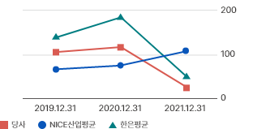

| 재무 비율 | 단위 | 2021.12.31 | 2022.12.31 | 2023.12.31 | NICE산업평균(2023) | 한은평균 (2023) |
|---|---|---|---|---|---|---|
| 순영업자본회전율 | % | 8.87 | 7.48 | 8.21 | 7.09 | - |
| 유동비율 | % | 193.46 | 192.43 | 220.26 | 128.06 | 132.56 |
| 당좌비율 | % | 193.46 | 192.43 | 220.26 | 125.66 | 130.94 |
| 현금비율 | % | 80.65 | 56.13 | 65.42 | 53.66 | 65.18 |
| 재무 비율 | 산식 | 해설 |
|---|---|---|
| 순영업자본회전율 | 매출액/2개년 평균 (매출채권+재고자산-매입채무) |
순영업자본회전율은 매출채권, 재고자산 그리고 매입채무를 고려한 순영업자본의 회전속도를 나타내는 지표입니다. 동 지표의 회전율이 높을수록 자금회수속도가 빠르며, 기업의 유동성이 증가하는 것으로 판단합니다. |
| 유동비율 | 유동자산/유동부채 x 100 | 유동비율은 단기채무에 충당할 수 있는 지급자산이 얼마나 되는지를 나타내는 비율로서 지급능력을 판단하는 대표적인 지표입니다. 유동비율이 100미만일 경우에는 지급능력이 악화됩니다. |
| 당좌비율 | 당좌자산/유동부채 x 100 | 당좌비율은 유동자산으로부터 환금성이 낮은 재고자산을 제외 후 지불 능력을 평가하려는 지표입니다. 현금화가 쉬운 당좌자산과 유동부채의 비율을 이용하여 기업의 지불 능력을 측정하여 높을수록 지불능력이 높다고 판단할 수 있습니다. |
| 현금비율 | 현금및현금성자산/유동부채 x 100 | 현금과 환금성이 높은 현금성자산은 기업의 단기 지급의무를 충족시키는데 가장 우선적이고 즉각적으로 사용될 수 있는 자산입니다. 본 비율은 현금및현금성자산을 유동부채로 나눈 비율로써 값이 높을수록 단기 지급의무 이행능력이 높다고 판단할 수 있습니다. |
